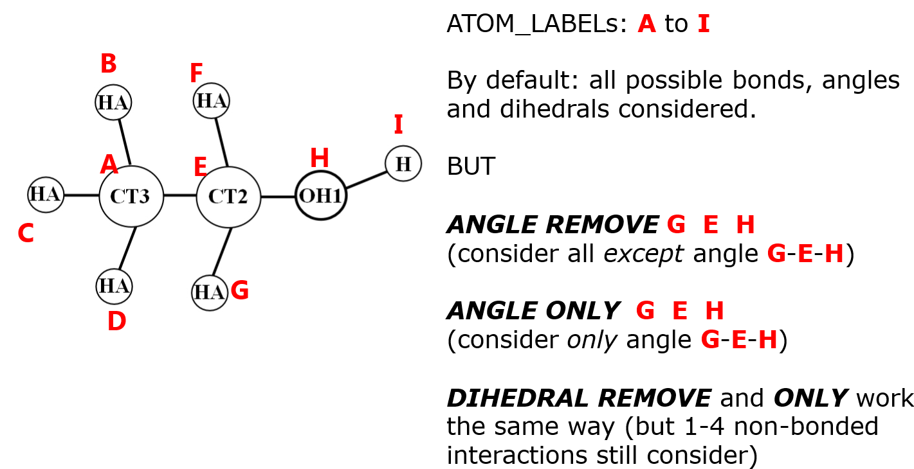

Selective interactions¶
By default, DL_FIELD will look for all possible two-body (bond), three-body (angle), and four-body (dihedral) interactions, based on the bond connections. However, DL_FIELD allows a selection of these interactions to be excluded and will not be considered in the DL_POLY simulation runs.
These optional directives are always defined after the CONNECT statements in MOLECULE templates.

REMOVE, ONLY and OFF directives
These directives must always be used in conjunction with the body interaction directives: BOND, ANGLE and DIHEDRAL. They are used to selectively include or exclude certain types of interactions. Diagram below illustrates the use of these directives.
{kind=link}
Note that each directive takes several parameters depending on types of interactions. For example:
BOND REMOVE label_1 label_2
ANGLE ONLY label_1 label_2 label_3
Example below shows the use of selective interaction directives in a calcium carbonate MOLECULE template:
MOLECULE calcium_carbonate1 5 0.0
Ca1 Ca2+#3_ternary_oxide1 1.668 OAR1
C1 C4+#3_ternary_oxide1 0.999 | aragonite, calcite
O1 O2-#2_ternary_oxide1 -0.889 Ca CAR1
O1 O2-#2_ternary_oxide1 -0.889 / \
O1 O2-#2_ternary_oxide1 -0.889 OAR1 OAR1
CONNECT Ca1 > 0 AUTO
CONNECT C1 > 3 AUTO
CONNECT O1 > 1 AUTO
CONNECT O1 > 1 AUTO
CONNECT O1 > 1 AUTO
ANGLE ONLY O1 C1 O1
IMPROPER C1 O1 O1 O1
END MOLECULE
To completely remove a type of interaction, use the OFF directive. For example:
DIHEDRAL OFF
Will remove all dihedral terms.
Warning
Avoid conflicting statements such as ANGLE OFF and ANGLE ONLY directives appeared within a same MOLECULE template.
Remove 1-4 non-bonded interactions
An atom pair that is separated by three bonds will usually be treated with vdw and coulombic interactions, called the 1-4 non-bonded interactions, and often scaled with some scaling factors. Such interaction can be switched off selectively within a MOLECULE. The syntax is as follows:
EXCLUSION_14 label_1 label_2 …
Each of such statement includes a group of ATOM_LABELs and exclusions will apply if any 1-4 atom pairs are identified within the atom group. Up to a number of 15 ATOMs can be specified in a statement.
Note
More than one EXCLUSION_14 statements can be defined within a MOLECULE and they are independant from each other. The 1-4 exclusions only apply to the respective group of atoms defined in each statement.